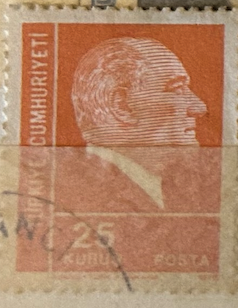
| SOURCE | TITLE| IMAGE MATCH | click to source page |
| www.ebay.com | Turkey - 1972 Ataturk | eBay | 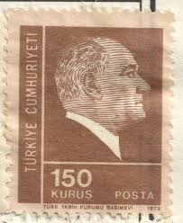 |
| www.dreamstime.com | Isolated Turkish Stamp editorial image. Image of paper ... | 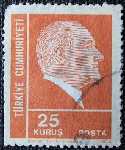 |
| www.alamy.com | TURKEY - CIRCA 1952: a stamp printed in the Turkey shows ... | 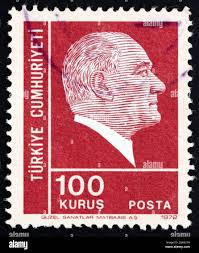 |
| www.stampedia.net | stampedia TURKEY STAMP catalog | 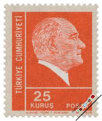 |
| www.ebay.com | 1953-56 Turkey SC# 1117B - Mustafa Kemal Pasha(Kemal Atatürk ... | 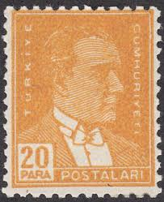 |
| www.shutterstock.com | Mustafa Kemal Ataturk Portrait: Over 1,226 Royalty-Free ... | 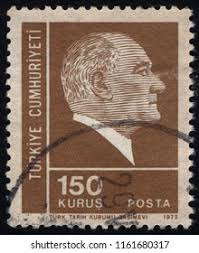 |
| vividagallery.com | Turkey Ataturk Portrait Lira Red Typography 1970s Engraving ... | 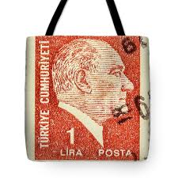 |
| colnect.com | Stamp: Kemal Ataturk (1881-1938) (Türkiye (Turkey)(Kemal ... | 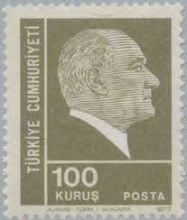 |
| www.kitantik.com | Efemera - 1975 TC Pulu - Atatürk Serisi 25 Kuruş - kitantik ... | 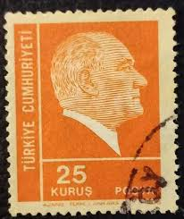 |
| www.dreamstime.com | Kemal Ataturk, Definitive Postage Stamps, 1975, Ataturk ... | 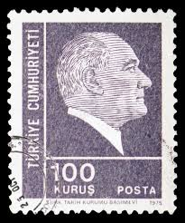 |
| www.buyhungarianstamps.com | 811-816 Turkey - Stamps of 1931-38 Overprinted in Black (MNH ... |  |
| www.stampedia.net | stampedia TURKEY STAMP catalog | 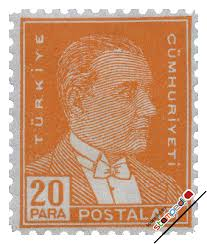 |
| www.123rf.com | MOSCOW, RUSSIA - FEBRUARY 10, 2019: A Stamp Printed In ... | 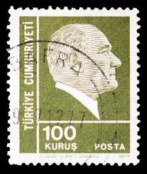 |
| www.hipstamp.com | TURKEY Scott 1021 MH* stamp from 1950 -1951 set | Europe ... | 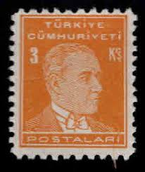 |
| www.shutterstock.com | Istanbul Turkey January 01 2021 Turkish Stock Photo ... | 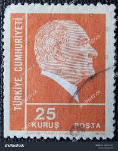 |
| www.kitantik.com | Mektup Zarfından Kesilmiş / Postadan Geçmiş Pul Filateli ... | 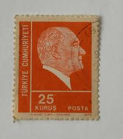 |
| www.istockphoto.com | Turkish Postage Stamp Stock Photo - Download Image Now ... | 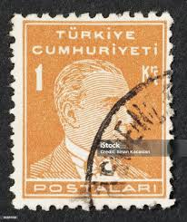 |
| ajuntament.barcelona.cat | Atatürk's Turkey - Col·leccio Marull |  |
| www.ebay.com | Turkey 1977, Definitive Stamp: Atatürk set MNH, Mi 2418-19 ... | 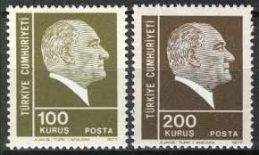 |
| koleksiyonmarket.com | 1978 Sürekli Atatürk Posta Pulları | 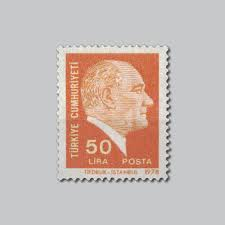 |
| cumhuriyetparalari.com | engraver arşivleri - Turkish Republican Money | 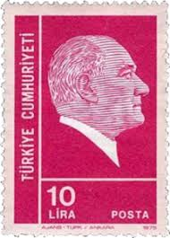 |
| www.alamy.com | TURKEY - CIRCA 1942: stamp printed by Turkey, shows ... | 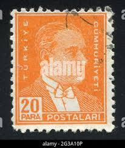 |
| en.todocoleccion.net | turquia - valor facial 25 kurus - año 1975 - mu - Buy ... |  |
| www.facebook.com | mzee_malik - Year: 1972 Face Value: 100 kurus Country ... | 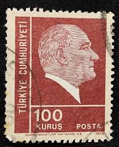 |
| play.google.com | Stamp Identifier Stamp Value - Apps en Google Play | 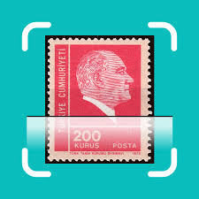 |
| www.dreamstime.com | TURKEY - CIRCA 1972: a Stamp Printed in Turkey Shows a ... | 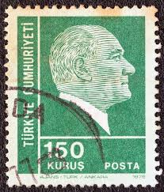 |
| www.mysticstamp.com | 811 - 1938 6c John Quincy Adams, Red Orange, Perf. 11x10.5 ... | 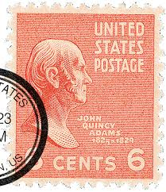 |
| www.istockphoto.com | 50+ Atatürk Postage Stamp Stock Photos, Pictures & Royalty ... | 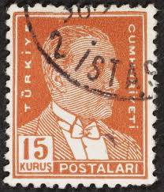 |
| www.shutterstock.com | 9+ Hundred Ataturk Stamps Royalty-Free Images, Stock Photos ... | 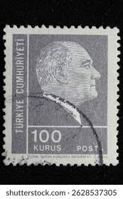 |
| jp.pinterest.com | Pul için 11 fikir | pul, posta pulu, kartpostal | 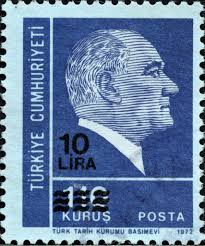 |
| colnect.com | Stamp: Turkish Stamps overprinted Hatay Devleti (HatayMi:TR ... | 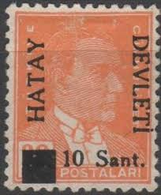 |
| www.linns.com | Hatay has ties to Ottoman Empire and Turkey | 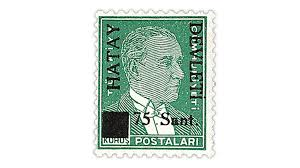 |
| blog.veve.me | USPS — Stamp Art — Presidential Series (1938) - Series 4 ... | 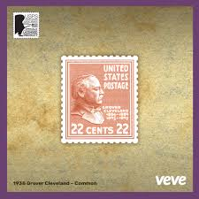 |
| www.buyhungarianstamps.com | 744 Turkey - Mustafa Kemal Pasha (Kemal Ataturk) – Eastern ... | 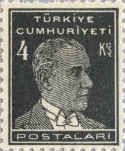 |
| stampencyclopedia.miraheze.org | Hatay - Stamp Encyclopedia |  |
| www.leboncoin.fr | Turquie - lot 33 timbres Atatürk - Collection | 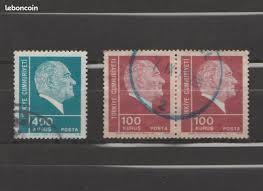 |
| www.stampedia.net | stampedia TURKEY STAMP catalog |  |
| www.alamy.com | TURKEY - CIRCA 1972: A postage stamp printed in Turkey shows ... | 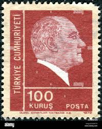 |
| www.lastdodo.com | 1939 Surcharge HATAY DEVLETI Stamp catalogue - LastDodo | 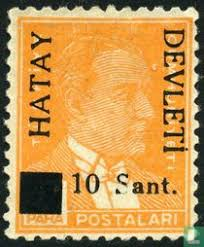 |
| www.mysticstamp.com | 846 - 1939 6c John Quincy Adams, Red Orange, Perf. 10 ... | 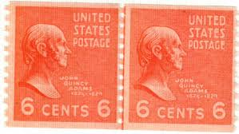 |
| www.pulkay.com.tr | pul,filateli,koleksiyon | 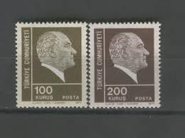 |
| volstamp.in.ua | Buy 1972 Turkey Stamp (Postage stamps, 1972-77. Ataturk) MNH ... | 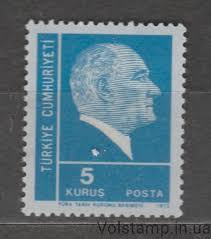 |
| postalmuseum.si.edu | Presidential Series (1938) | National Postal Museum | 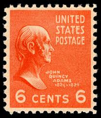 |
| www.ebay.com | Turkey Famous Leader President Kemal Atatürk rare stamp 1940 ... | 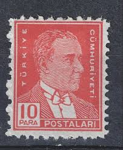 |
| koleksiyonmarket.com | 1980 Sürekli Posta Pulu | 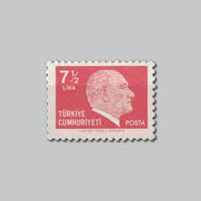 |
| www.shutterstock.com | Istanbul Turkey December 27 2020 Turkish Stock Photo ... | 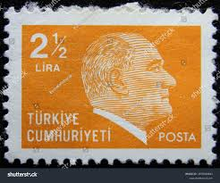 |
| www.efocc.org | EFOCC | 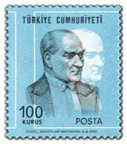 |
| www.istockphoto.com | Mustafa Kemal Ataturk Stamp Stock Photo - Download Image Now ... | 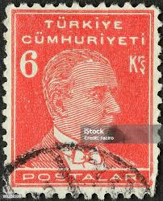 |
| www.dreamstime.com | Turkiye Cumhuriyeti Stock Photos - Free & Royalty-Free Stock ... | 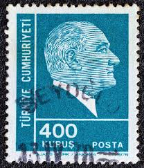 |
| www.freestampcatalogue.com | Stamps from Türkiye - Freestampcatalogue.com - The free ... | 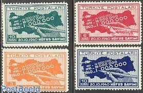 |
| www.alamy.com | Postage stamp turkey hi-res stock photography and images - Alamy | 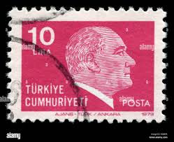 |
| www.mysticstamp.com | 829 - 1938 25c William McKinley, Deep Red Violet - Mystic ... | 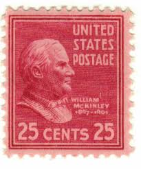 |
| jerusalemstamps.com | JNF Germany office brown 1945 Bialik & Herzl stamp, Roch ... | 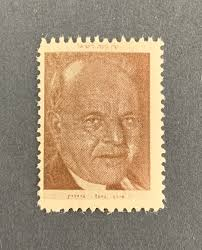 |
| www.allnumis.com | 0,50 Dinar 1968 - Josip Broz Tito, Person-Personality ... | 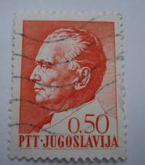 |
| www.stampcollectingblog.com | Czechoslovakian Masaryk postage stamps of 1925 -1927 | |
| pngtree.com | Mustafa Kemal Atatürk PNG, Vector, PSD, and Clipart With ... | |
| www.usphila.com | Values of US Stamps Scott Catalogue 199 - 1880 15c Webster ... | |
| www.etsy.com | French Republique Francaise 50f Stamp; Rose Red; F/NH, NG ... | |
| www.facebook.com | 1970 Turkish lira note featuring Ataturk |  |